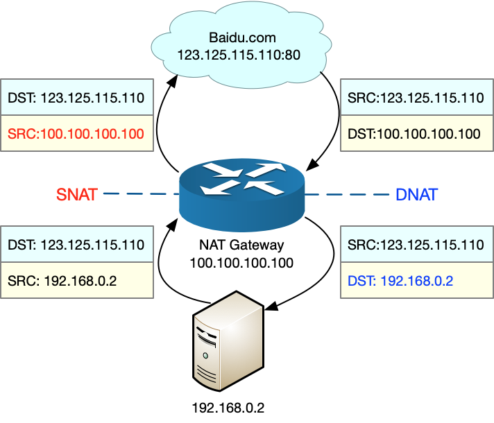
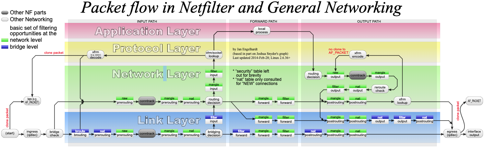

- 00 开篇词 别再让Linux性能问题成为你的绊脚石.md.html
- 01 如何学习Linux性能优化？.md.html
- 02 基础篇：到底应该怎么理解“平均负载”？.md.html
- 03 基础篇：经常说的 CPU 上下文切换是什么意思？（上）.md.html
- 04 基础篇：经常说的 CPU 上下文切换是什么意思？（下）.md.html
- 05 基础篇：某个应用的CPU使用率居然达到100%，我该怎么办？.md.html
- 06 案例篇：系统的 CPU 使用率很高，但为啥却找不到高 CPU 的应用？.md.html
- 07 案例篇：系统中出现大量不可中断进程和僵尸进程怎么办？（上）.md.html
- 08 案例篇：系统中出现大量不可中断进程和僵尸进程怎么办？（下）.md.html
- 09 基础篇：怎么理解Linux软中断？.md.html
- 10 案例篇：系统的软中断CPU使用率升高，我该怎么办？.md.html
- 11 套路篇：如何迅速分析出系统CPU的瓶颈在哪里？.md.html
- 12 套路篇：CPU 性能优化的几个思路.md.html
- 13 答疑（一）：无法模拟出 RES 中断的问题，怎么办？.md.html
- 14 答疑（二）：如何用perf工具分析Java程序？.md.html
- 15 基础篇：Linux内存是怎么工作的？.md.html
- 16 基础篇：怎么理解内存中的Buffer和Cache？.md.html
- 17 案例篇：如何利用系统缓存优化程序的运行效率？.md.html
- 18 案例篇：内存泄漏了，我该如何定位和处理？.md.html
- 19 案例篇：为什么系统的Swap变高了（上）.md.html
- 20 案例篇：为什么系统的Swap变高了？（下）.md.html
- 21 套路篇：如何“快准狠”找到系统内存的问题？.md.html
- 22 答疑（三）：文件系统与磁盘的区别是什么？.md.html
- 23 基础篇：Linux 文件系统是怎么工作的？.md.html
- 24 基础篇：Linux 磁盘I_O是怎么工作的（上）.md.html
- 25 基础篇：Linux 磁盘I_O是怎么工作的（下）.md.html
- 26 案例篇：如何找出狂打日志的“内鬼”？.md.html
- 27 案例篇：为什么我的磁盘I_O延迟很高？.md.html
- 28 案例篇：一个SQL查询要15秒，这是怎么回事？.md.html
- 29 案例篇：Redis响应严重延迟，如何解决？.md.html
- 30 套路篇：如何迅速分析出系统I_O的瓶颈在哪里？.md.html
- 31 套路篇：磁盘 I_O 性能优化的几个思路.md.html
- 32 答疑（四）：阻塞、非阻塞 I_O 与同步、异步 I_O 的区别和联系.md.html
- 33 关于 Linux 网络，你必须知道这些（上）.md.html
- 34 关于 Linux 网络，你必须知道这些（下）.md.html
- 35 基础篇：C10K 和 C1000K 回顾.md.html
- 36 套路篇：怎么评估系统的网络性能？.md.html
- 37 案例篇：DNS 解析时快时慢，我该怎么办？.md.html
- 38 案例篇：怎么使用 tcpdump 和 Wireshark 分析网络流量？.md.html
- 39 案例篇：怎么缓解 DDoS 攻击带来的性能下降问题？.md.html
- 40 案例篇：网络请求延迟变大了，我该怎么办？.md.html
- 41 案例篇：如何优化 NAT 性能？（上）.md.html
- 42 案例篇：如何优化 NAT 性能？（下）.md.html
- 43 套路篇：网络性能优化的几个思路（上）.md.html
- 44 套路篇：网络性能优化的几个思路（下）.md.html
- 45 答疑（五）：网络收发过程中，缓冲区位置在哪里？.md.html
- 46 案例篇：为什么应用容器化后，启动慢了很多？.md.html
- 47 案例篇：服务器总是时不时丢包，我该怎么办？（上）.md.html
- 48 案例篇：服务器总是时不时丢包，我该怎么办？（下）.md.html
- 49 案例篇：内核线程 CPU 利用率太高，我该怎么办？.md.html
- 50 案例篇：动态追踪怎么用？（上）.md.html
- 51 案例篇：动态追踪怎么用？（下）.md.html
- 52 案例篇：服务吞吐量下降很厉害，怎么分析？.md.html
- 53 套路篇：系统监控的综合思路.md.html
- 54 套路篇：应用监控的一般思路.md.html
- 55 套路篇：分析性能问题的一般步骤.md.html
- 56 套路篇：优化性能问题的一般方法.md.html
- 57 套路篇：Linux 性能工具速查.md.html
- 58 答疑（六）：容器冷启动如何性能分析？.md.html
- 加餐（一） 书单推荐：性能优化和Linux 系统原理.md.html
- 加餐（二） 书单推荐：网络原理和 Linux 内核实现.md.html
- 用户故事 “半路出家 ”，也要顺利拿下性能优化！.md.html
- 用户故事 运维和开发工程师们怎么说？.md.html
- 结束语 愿你攻克性能难关.md.html
- 捐赠
41 案例篇：如何优化 NAT 性能？（上）
你好，我是倪朋飞。
上一节，我们探究了网络延迟增大问题的分析方法，并通过一个案例，掌握了如何用 hping3、tcpdump、Wireshark、strace 等工具，来排查和定位问题的根源。
简单回顾一下，网络延迟是最核心的网络性能指标。由于网络传输、网络包处理等各种因素的影响，网络延迟不可避免。但过大的网络延迟，会直接影响用户的体验。
所以，在发现网络延迟增大的情况后，你可以先从路由、网络包的收发、网络包的处理，再到应用程序等，从各个层级分析网络延迟，等到找出网络延迟的来源层级后，再深入定位瓶颈所在。
今天，我再带你来看看，另一个可能导致网络延迟的因素，即网络地址转换（Network Address Translation），缩写为 NAT。
接下来，我们先来学习 NAT 的工作原理，并弄清楚如何优化 NAT 带来的潜在性能问题。
NAT原理
NAT 技术可以重写 IP 数据包的源 IP 或者目的 IP，被普遍地用来解决公网 IP 地址短缺的问题。它的主要原理就是，网络中的多台主机，通过共享同一个公网 IP 地址，来访问外网资源。同时，由于 NAT 屏蔽了内网网络，自然也就为局域网中的机器提供了安全隔离。
你既可以在支持网络地址转换的路由器（称为 NAT 网关）中配置 NAT，也可以在 Linux 服务器中配置 NAT。如果采用第二种方式，Linux 服务器实际上充当的是“软”路由器的角色。
NAT 的主要目的，是实现地址转换。根据实现方式的不同，NAT 可以分为三类：
静态 NAT，即内网 IP 与公网 IP 是一对一的永久映射关系；
动态 NAT，即内网 IP 从公网 IP 池中，动态选择一个进行映射；
网络地址端口转换 NAPT（Network Address and Port Translation），即把内网 IP 映射到公网 IP 的不同端口上，让多个内网 IP 可以共享同一个公网 IP 地址。
NAPT 是目前最流行的 NAT 类型，我们在 Linux 中配置的 NAT 也是这种类型。而根据转换方式的不同，我们又可以把 NAPT 分为三类。
第一类是源地址转换SNAT，即目的地址不变，只替换源 IP 或源端口。SNAT 主要用于，多个内网 IP 共享同一个公网 IP ，来访问外网资源的场景。
第二类是目的地址转换DNAT，即源 IP 保持不变，只替换目的 IP 或者目的端口。DNAT 主要通过公网 IP 的不同端口号，来访问内网的多种服务，同时会隐藏后端服务器的真实 IP 地址。
第三类是双向地址转换，即同时使用 SNAT 和 DNAT。当接收到网络包时，执行 DNAT，把目的 IP 转换为内网 IP；而在发送网络包时，执行 SNAT，把源 IP 替换为外部 IP。
双向地址转换，其实就是外网 IP 与内网 IP 的一对一映射关系，所以常用在虚拟化环境中，为虚拟机分配浮动的公网 IP 地址。
为了帮你理解 NAPT，我画了一张图。我们假设：
本地服务器的内网 IP 地址为 192.168.0.2；
NAT 网关中的公网 IP 地址为 100.100.100.100；
要访问的目的服务器 baidu.com 的地址为 123.125.115.110。
那么 SNAT 和 DNAT 的过程，就如下图所示：

从图中，你可以发现：
当服务器访问 baidu.com 时，NAT 网关会把源地址，从服务器的内网 IP 192.168.0.2 替换成公网 IP 地址 100.100.100.100，然后才发送给 baidu.com；
当 baidu.com 发回响应包时，NAT 网关又会把目的地址，从公网 IP 地址 100.100.100.100 替换成服务器内网 IP 192.168.0.2，然后再发送给内网中的服务器。
了解了 NAT 的原理后，我们再来看看，如何在 Linux 中实现 NAT 的功能。
iptables与NAT
Linux 内核提供的 Netfilter 框架，允许对网络数据包进行修改（比如 NAT）和过滤（比如防火墙）。在这个基础上，iptables、ip6tables、ebtables 等工具，又提供了更易用的命令行接口，以便系统管理员配置和管理 NAT、防火墙的规则。
其中，iptables 就是最常用的一种配置工具。要掌握 iptables 的原理和使用方法，最核心的就是弄清楚，网络数据包通过 Netfilter 时的工作流向，下面这张图就展示了这一过程。
- （图片来自 Wikipedia）
在这张图中，绿色背景的方框，表示表（table），用来管理链。Linux 支持 4 种表，包括 filter（用于过滤）、nat（用于NAT）、mangle（用于修改分组数据） 和 raw（用于原始数据包）等。
跟 table 一起的白色背景方框，则表示链（chain），用来管理具体的 iptables 规则。每个表中可以包含多条链，比如：
filter 表中，内置 INPUT、OUTPUT 和 FORWARD 链；
nat 表中，内置PREROUTING、POSTROUTING、OUTPUT 等。
当然，你也可以根据需要，创建你自己的链。
灰色的 conntrack，表示连接跟踪模块。它通过内核中的连接跟踪表（也就是哈希表），记录网络连接的状态，是 iptables 状态过滤（-m state）和 NAT 的实现基础。
iptables 的所有规则，就会放到这些表和链中，并按照图中顺序和规则的优先级顺序来执行。
针对今天的主题，要实现 NAT 功能，主要是在 nat 表进行操作。而 nat 表内置了三个链：
PREROUTING，用于路由判断前所执行的规则，比如，对接收到的数据包进行 DNAT。
POSTROUTING，用于路由判断后所执行的规则，比如，对发送或转发的数据包进行 SNAT 或 MASQUERADE。
OUTPUT，类似于 PREROUTING，但只处理从本机发送出去的包。
熟悉 iptables 中的表和链后，相应的 NAT 规则就比较简单了。我们还以 NAPT 的三个分类为例，来具体解读一下。
SNAT
根据刚才内容，我们知道，SNAT 需要在 nat 表的 POSTROUTING 链中配置。我们常用两种方式来配置它。
第一种方法，是为一个子网统一配置 SNAT，并由 Linux 选择默认的出口 IP。这实际上就是经常说的 MASQUERADE：
$ iptables -t nat -A POSTROUTING -s 192.168.0.0/16 -j MASQUERADE
第二种方法，是为具体的 IP 地址配置 SNAT，并指定转换后的源地址：
$ iptables -t nat -A POSTROUTING -s 192.168.0.2 -j SNAT --to-source 100.100.100.100
DNAT
再来看DNAT，显然，DNAT 需要在 nat 表的 PREROUTING 或者 OUTPUT 链中配置，其中， PREROUTING 链更常用一些（因为它还可以用于转发的包）。
$ iptables -t nat -A PREROUTING -d 100.100.100.100 -j DNAT --to-destination 192.168.0.2
双向地址转换
双向地址转换，就是同时添加 SNAT 和 DNAT 规则，为公网 IP 和内网 IP 实现一对一的映射关系，即：
$ iptables -t nat -A POSTROUTING -s 192.168.0.2 -j SNAT --to-source 100.100.100.100
$ iptables -t nat -A PREROUTING -d 100.100.100.100 -j DNAT --to-destination 192.168.0.2
在使用 iptables 配置 NAT 规则时，Linux 需要转发来自其他 IP 的网络包，所以你千万不要忘记开启 Linux 的 IP 转发功能。
你可以执行下面的命令，查看这一功能是否开启。如果输出的结果是 1，就表示已经开启了 IP 转发：
$ sysctl net.ipv4.ip_forward
net.ipv4.ip_forward = 1
如果还没开启，你可以执行下面的命令，手动开启：
$ sysctl -w net.ipv4.ip_forward=1
net.ipv4.ip_forward = 1
当然，为了避免重启后配置丢失，不要忘记将配置写入 /etc/sysctl.conf 文件中：
$ cat /etc/sysctl.conf | grep ip_forward
net.ipv4.ip_forward=1
讲了这么多的原理，那当碰到 NAT 的性能问题时，又该怎么办呢？结合我们今天学过的 NAT 原理，你先自己想想，动手试试，下节课我们继续“分解”。
小结
今天，我们一起学习了 Linux 网络地址转换 NAT 的原理。
NAT 技术能够重写 IP 数据包的源 IP 或目的 IP，所以普遍用来解决公网 IP 地址短缺的问题。它可以让网络中的多台主机，通过共享同一个公网 IP 地址，来访问外网资源。同时，由于 NAT 屏蔽了内网网络，也为局域网中机器起到安全隔离的作用。
Linux 中的NAT ，基于内核的连接跟踪模块实现。所以，它维护每个连接状态的同时，也会带来很高的性能成本。具体 NAT 性能问题的分析方法，我们将在下节课继续学习。
思考
最后，给你留一个思考题。MASQUERADE 是最常用的一种 SNAT 规则，常用来为多个内网 IP 地址提供共享的出口 IP。
假设现在有一台 Linux 服务器，使用了 MASQUERADE 的方式，为内网的所有 IP 提供出口访问功能。那么，
当多个内网 IP 地址的端口号相同时，MASQUERADE 还可以正常工作吗？
如果内网 IP 地址数量或请求数比较多，这种方式有没有什么隐患呢？
欢迎在留言区和我讨论，也欢迎你把这篇文章分享给你的同事、朋友。我们一起在实战中演练，在交流中进步。
© 2019 - 2023 Liangliang Lee. Powered by gin and hexo-theme-book.